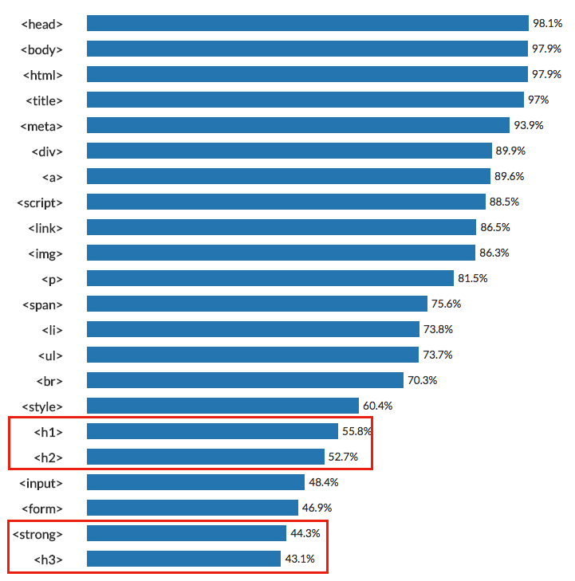

- HTML
- CSS
- JavaScript
HTML의 문법
사용 빈도수가 높은 태그들

Details
- head, settings, titles
- body, contains
- html, !doctype html
- title, giving a title of web
- meta, change the setting like how to read
- div
- a, link href(hypertext ref)
- script
- link
- img, attach img by src command
- p, dividing a paragraph
- span
- li, list
- ul, unorder list
- br, a link break doesn't need to be closed
- style
- h1 means the most important heading
- h2, same with above
- input, buttons various settings
- form
- strong means Thick letter(importance)
- u means underline
- table tr means table row, td menas table data
유튜브에서 iframe 이라는 코드가 사용됨. 동영상 예시 ex using live